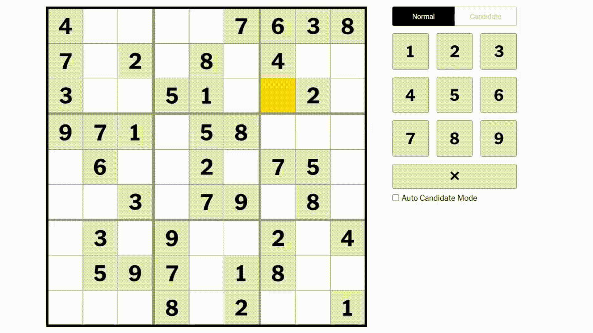

Last updated Sep. 1, 2024
I’ve always loved doing the sudoku.
It started in the summer of 2015. I was a senior in high school and had just started the college application process. Like many teenagers, I signed up for the SAT. Like many teenagers, I compiled a list of safety and target schools. And, like many teenagers, I was beginning to panic about acceptances.
One particular afternoon, I found myself down a rabbit hole full of self doubt and insecurity. I felt like I wasn’t smart enough, or my grades would pull down my application, or that my essays wouldn’t stand out.
I needed to challenge this voice in my head. I knew I was smart and capable (or so I thought). I looked around for a way to prove it and saw the Sunday newspaper on the coffee table in front of me, open to the puzzles page. I told myself if I could solve that day’s sudoku, I could prove to myself that I had what it takes to get acceptances. I solved that sudoku and haven’t stopped doing it since.
I got so into the puzzle in high school, I completed 100 sudokus in 100 consecutive days. I’d take our newspaper’s puzzles page to school and solve it during class. A classmate once said while most students had their phones out under their desks, I had the sudoku. When I moved to the US for college, I bought a book full of puzzles. I was crazy about it.
And then I stopped doing it just as quickly as I had started.
In October 2020, a girl I liked texted me: “Do u wanna have a sudoku race 👉🥺👈”
We solved that day’s New York Times’ easy puzzle and hundreds of sudokus since then to see who could complete it first.
We even started a spreadsheet to track our times. Our competitive natures pushed us to challenge each other almost daily. Like in high school, I was constantly thinking about how to get faster.
Then, in January 2023, I made a breakthrough. I started tracking what grids I fill out and how I fill them out. And in the weeks since, I started to analyze my performance to look for patterns and ways I could speed up. As a throwback to my high school self, I decided to analyze from 100 Easy sudokus to see what I could learn. This essay has a few insights I’ve found.
When I first see a sudoku grid, my instinct is to look for naked singles. Naked singles are cells where there can be only one possible value. They're the slam dunks. No-brainers. Easy pickings. (They’re also called sole candidates, but why would you call them that when you could say naked singles? I digress.)
In the NYTimes grid above, only the number 9 can be played in the highlighted cell.
Using the process of elimination, I identify naked singles and solve those cells. I only ever fill in a value when it’s a naked single, i.e., I never guess. So when I fill out the grid, I almost never redo cells once I fill them. This is a tradition I’ve digitized — high school me would fill out grids with a pen.
As you solve each cell in the sudoku, you eliminate possible values throughout the grid. For example, putting a 5 in one cell means you can’t play a 5 anywhere else in that row, column, or section. In the process of filling out cells, you create more naked singles.
Essentially, by getting the numbers of these naked singles, you're introduced to their other naked single friends.
And this is a great way to analyze my performance.
Based on the analysis above, I quickly solve cells that are towards the top, then take longer to fill out cells that are in the middle and bottom.
Why do I tend to take longer in these areas? I think it has something to do with how the cells come prefilled. Let's talk about that.
Like Jeopardy! and its daily doubles, the Times’ sudoku grids tend to have the same cells prefilled. On average, the easy sudoku comes with xx values prefilled.
Data above is from xxx Times sudokus. Hover over each cell above to see how often it came prefilled.
From the grid above, we see that the typical NYT easy sudoku has more prefilled cells towards the top. This makes it easier to start from the top. In fact, of the 100 sudokus I've collected data for, my first move is in the top three rows in xx of them.
The higher density of cells also makes it easier for my next strategy: slicing and dicing. No, not vegetables. Slicing and dicing is a common maneuvre where, once you identify a cell you want to solve, you quickly scan its row and its column to see what numbers that cell can't be. In fact, in the primer on naked singles above, I you could solve the empty cell by slicing and dicing, rather than cycling through all nine numbers.
Maybe an animation/image of slicing and dicing.To recap, I start at the top, where there are more prefilled cells, then I slowly make my way to the middle and then the bottom.
The next section will be a scrollytelling section walking through how I fill out my grids. The main takeaway is I always start toward the top (bc high density of prefilled cells), then the middle section, then the bottom -- which is why I spend longer on those sections.Crazy as it may sound, I’m not as into the sudoku now as much as when I was a teenager. While I still try to solve the puzzle once a day, teenage me would always have a grid on his person.
I started this project with the intention to use analytics to find patterns in how I solve the sudoku. A huge takeaway is the way I move through the grid. I could further analyze my data to see where I make mistakes; if certain types of grids trip me up (preliminary analysis says the grids themselves don't have much in common), or; if there are certain numbers I fill out first.
But in the journey, I learned that each puzzle was as unique as each day — each puzzle warrants a different perspective. Maybe I solved a puzzle faster than expected because I was excited, or maybe I missed a naked single because I was distracted.
As much as I’ve loved working on this project, a limitation of data collection is that, in order to track my data, I could only fill out the puzzle on my laptop. As a result, the data doesn't include puzzles I've solved on my phone. Also, since I'm not always around my laptop, I actually solved the sudoku less often than before I started tracking my data (because I'd always put off solving the puzzle).
Maybe the biggest takeaway is to not measure everything and be in the moment?
I created a JavaScript browser extension on my laptop to track how I filled out the Times’ easy sudoku grid and then send this data to a server running on my Raspberry Pi. I used Jupyter notebooks to analyze my performance, and React + D3 to visualize the data on this page.
Check out my work on this project here or my portfolio here. Feel free to use the extension to analyze your performance — it only works on the NYT website, but can be edited to work on other websites too.
Lastly, please reach out if you have tips on getting faster!